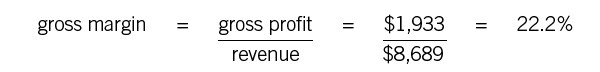
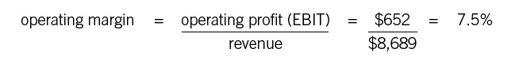
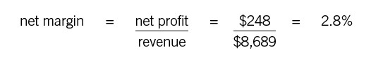
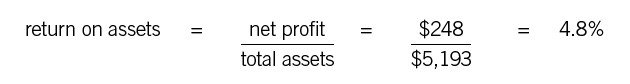
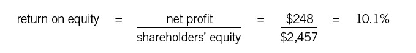
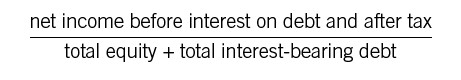
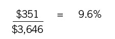

Profitability Ratios
The Higher the Better (Mostly)
Profitability ratios help you evaluate a company’s ability to generate profits. There are dozens of them, a fact that helps keep the financial folks busy. But here we’re going to focus on just the most important. These are really the only ones most managers need to understand and use. Profitability ratios are the most common of ratios. If you get these, you’ll be off to a good start in financial statement analysis.
Before we dive in, however, do remember the artful aspects of what we’re looking at. Profitability is a measure of a company’s ability to generate sales and to control its expenses. None of these numbers is wholly objective. Sales are subject to rules as to when the revenue can be recorded. Expenses are often a matter of estimation, not to say guesswork. Assumptions are built into both sets of numbers. So profit as reported on the income statement is a product of the art of finance, and any ratio based on those numbers will itself reflect all those estimates and assumptions. We don’t propose throwing out the baby with the bathwater—the ratios are still useful—only that you keep in mind that estimates and assumptions can always change.
Now, on to the profitability ratios that we promised you.
GROSS PROFIT MARGIN PERCENTAGE
Gross profit, you’ll recall, is revenue minus cost of goods sold. Gross profit margin percentage, often called gross margin, is simply gross profit divided by revenue, with the result expressed as a percentage. Look at the sample income statement in the appendix, which we’ll use to calculate examples of all these ratios. In this case the calculation is as follows:

Gross margin shows the basic profitability of the product or service itself, before expenses or overhead are added in. It tells you how much of every sales dollar you get to use in the business—22.2 cents in this example—and (indirectly) how much you must pay out in direct costs (COGS or COS), just to get the product produced or the service delivered. (COGS or COS is 77.8 cents per sales dollar in this example.) It’s thus a key measure of a company’s financial health. After all, if you can’t deliver your products or services at a price that is sufficiently above cost to support the rest of your company, you don’t have a chance of earning a net profit.
Trend lines in gross margin are equally important, because they indicate potential problems. Say a company announces great sales numbers in one quarter—better than expected—but then its stock drops. How could that be? Perhaps analysts noted that gross margin percentage was heading downward and assumed that the company must have been doing considerable discounting to record the sales it did. In general, a negative trend in gross margin indicates one of two things (sometimes both). Either the company is under severe price pressure and salespeople are being forced to discount, or else materials and labor costs are rising, driving up COGS or COS. Gross margin thus can be a kind of early-warning light, indicating favorable or unfavorable trends in the marketplace.
OPERATING PROFIT MARGIN PERCENTAGE
Operating profit margin percentage, or operating margin, is a more comprehensive measure of a company’s ability to generate profit. Operating profit or EBIT, remember, is gross profit minus operating expenses, so the level of operating profit indicates how well a company is running its entire business from an operational standpoint. Operating margin is just operating profit divided by revenue, with the result expressed as a percentage:

Operating margin can be a key metric for managers to watch, and not just because many companies tie bonus payments to operating-margin targets. The reason is that nonfinancial managers don’t have much control over the other items—interest and taxes—that are ultimately subtracted to get net profit margin. So operating margin is a good indicator of how well managers as a group are doing their jobs. A downward trend line in operating margin should be a flashing yellow light. It shows that costs and expenses are rising faster than sales, which is rarely a healthy sign. As with gross margin, it’s easier to see the trends in operating results when you’re looking at percentages rather than raw numbers. A percentage change shows not only the direction of the change but how great a change it is.
NET PROFIT MARGIN PERCENTAGE
Net profit margin percentage, or net margin, tells a company how much out of every sales dollar it gets to keep after everything else has been paid for—people, vendors, lenders, the government, and so on. It is also known as return on sales, or ROS. Again, it’s just net profit divided by revenue, expressed as a percentage:

Net profit is the proverbial bottom line, so net margin is a bottom-line ratio. But it’s highly variable from one industry to another. Net margin is low in most kinds of retailing, for example. In some kinds of manufacturing it can be relatively high. The best point of comparison for net margin is a company’s performance in previous time periods and its performance relative to similar companies in the same industry.
All the ratios we have looked at so far use numbers from the income statement alone. Now we want to introduce some different profitability metrics, which draw from both the income statement and the balance sheet.
RETURN ON ASSETS
Return on assets, or ROA, tells you what percentage of every dollar invested in the business was returned to you as profit. This measure isn’t quite as intuitive as the ones we already mentioned, but the fundamental idea isn’t complex. Every business puts assets to work: cash, facilities, machinery, equipment, vehicles, inventory, whatever. A manufacturing company may have a lot of capital tied up in plant and equipment. A service business may have expensive computer and telecommunications systems. Retailers need a lot of inventory. All these assets show up on the balance sheet. The total assets figure shows how many dollars, in whatever form, are being utilized in the business to generate profit. ROA simply shows how effective the company is at using those assets to generate profit. It’s a measure that can be used in any given industry to compare the performance of companies of different size.
The formula (and sample calculation) is simply this:

ROA has another idiosyncrasy by comparison with the income statement ratios mentioned earlier. It’s hard for gross margin or net margin to be too high; you generally want to see them as high as possible. But ROA can be too high. An ROA that is considerably above the industry norm may suggest that the company isn’t renewing its asset base for the future—that is, it isn’t investing in new machinery and equipment. If that’s true, its long-term prospects will be compromised, however good its ROA may look at the moment. (In assessing ROA, however, remember that norms vary widely from one industry to another. Service and retail businesses require less in terms of assets than manufacturing companies; then again, they usually generate lower margins.)
Another possibility if ROA is very high is that executives are playing fast and loose with the balance sheet, using various accounting tricks to reduce the asset base and therefore making the ROA look better. Remember Enron, the energy-trading company that collapsed in 2001? Enron had set up a host of partnerships partially owned by CFO Andrew Fastow and other executives, and then it “sold” assets to the partnerships. The company’s share of the partnerships’ profits appeared in its income statement, but the assets were nowhere to be found on its balance sheet. Enron’s ROA was great, but Enron wasn’t a healthy company.
. . .
Return on Investment
Why isn’t ROI included in our list of profitability ratios? The reason is that the term has a number of different meanings. Traditionally, ROI was the same as ROA: return on assets. But these days it can also mean return on a particular investment. What is the ROI on that machine? What’s the ROI on our training program? What’s the ROI of our new acquisition? These calculations will be different depending on how people are measuring costs and returns. We’ll return to ROI calculations of this sort in part 6.
. . .
RETURN ON EQUITY
Return on equity, or ROE, is a little different: it tells us what percentage of profit we make for every dollar of equity invested in the company. Remember the difference between assets and equity: assets refers to what the company owns, and equity refers to its net worth as determined by accounting rules.
As with the other profitability ratios, ROE can be used to compare a company with its competitors (and, indeed, with companies in other industries). Still, the comparison isn’t always simple. For instance, Company A may have a higher ROE than Company B because it has borrowed more money—that is, it has greater liabilities and proportionately less equity invested in the company. Is this good or bad? The answer depends on whether Company A is taking on too much risk or whether, by contrast, it is using borrowed money judiciously to enhance its return. That gets us into ratios such as debt-to-equity, which we’ll take up in chapter 22.
At any rate, here are the formula and sample calculation for ROE:

From an investor’s perspective, ROE is a key ratio. Depending on interest rates, an investor can probably earn 2, 3, or 4 percent on a treasury bond, which is about as close to a risk-free investment as you can get. So if someone is going to put money into a company, he’ll want a substantially higher return on his equity. ROE doesn’t specify how much cash he’ll ultimately get out of the company, since that depends on the company’s decision about dividend payments and on how much the stock price appreciates until he sells. But it’s a good indication of whether the company is even capable of generating a return that is worth whatever risk the investment may entail.
VARIATIONS ON A THEME: RONA, ROTC, ROIC, AND ROCE
Many businesses use somewhat more complex profitability ratios to gauge their performance. These include return on net assets (RONA), return on total capital (ROTC), return on invested capital (ROIC), and return on capital employed (ROCE). Individual businesses use different formulas to calculate these ratios, but they all measure essentially the same thing: how much return the business generated relative to its outside investment and financing. In other words, they answer this question: Did the company earn enough of a profit to justify the amount of “other people’s money” it is using?
A generic version of the formula used in calculating these ratios looks like this:

The numerator is often called NOPAT, which stands for net operating profit after tax. It shows how much money the company would have made if it (a) had no debt and thus (b) had no interest costs but (c) had to pay taxes on all of its operating profits. (Interest on debt is deductible for tax purposes.)
In the RONA or net assets approach, the denominator is total assets minus all assets financed by non-interest-bearing liabilities, such as accounts payable and accrued expenses. In the ROCE, ROIC, or ROTC approach, shown in the equation above, the denominator is total equity plus all interest-bearing debt. Fundamentally, the various approaches amount to the same thing. You are separating out the liabilities you have to pay interest on from those you don’t. The separation reflects the fact that some of the financing necessary to run a business comes from such items as accrued liabilities, accounts payable, and deferred taxes. These will ultimately wind up as charges on the income statement, but the people to whom the money is owed don’t expect a return.
Using the sample income statement and balance sheet in the appendix, you can calculate these ratios as follows. We have left out the zeroes for simplicity’s sake:
1. Calculate the company’s income before taxes. This is just operating income or EBIT less interest expenses: $652 – $191 = $461.
2. Determine the company’s tax rate. It shows a charge on the income statement of $213 for taxes, and $213/$461 = 46 percent. This is a bit higher than most US businesses, which usually pay between 30 percent and 40 percent.
3. Determine the tax liability on the company’s operating profit: $652 × 46% = $301. NOPAT or net operating profit after tax is $652 – $301 or $351. This is the numerator of all the ratios.
4. Calculate the denominator. First add up all the interest-bearing debt on the balance sheet. In this case the category includes the credit line of $100, the current portion of long-term debt of $52, and the long-term debt of $1,037. The total is $1,189. The other liabilities on the balance sheet don’t carry interest—though in the real world you might need to study them to make sure that is the case. Usually it is.
5. Now add this figure to total equity: $1,189 + $2,457 = $3,646. This is the all the capital that outsiders have provided plus whatever the company has retained from profits. It is the denominator of the ratio.
6. Finally, calculate the RONA, ROTC, ROIC, or ROCE for this business:

What does it all mean? For every dollar tied up in this company, the return in the past year was 9.6 percent. If the ratio is higher than expected, stakeholders with money in the business are happy. If it is lower, they might want to look elsewhere. These ratios are essential for measuring the return on the business’s overall capital.
One note on all such ratios: you’ll notice that they compare a profit number taken from the income statement to a capital number taken from the balance sheet. This creates a potential problem: NOPAT represents money earned during an entire year, but the denominator—total capital—is shown for a single point in time, the end of the year. Many financial folks prefer to take an average of several balance sheets during the year to get an “average” total capital figure rather than using just year-end numbers. (See the toolbox at the end of this part for more on this topic.)
Whether you’re calculating simple profitability ratios or more complex ones, do remember one thing: the numerator is some form of profit, which is always an estimate. The denominators, too, are based on assumptions and estimates. The ratios are useful, particularly when they are tracked over time to establish trend lines. But we shouldn’t be lulled into thinking that they are impervious to artistic effort.